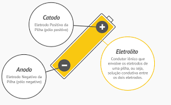

<!DOCTYPE html>
<html lang="en">
<head>
    <meta charset="UTF-8">
    <meta name="viewport" content="width=device-width, initial-scale=1.0">
    <title>Document</title>
    <link href="https://cdn.jsdelivr.net/npm/bootstrap@5.3.3/dist/css/bootstrap.min.css" 
    rel="stylesheet" 
    integrity="sha384-QWTKZyjpPEjISv5WaRU9OFeRpok6YctnYmDr5pNlyT2bRjXh0JMhjY6hW+ALEwIH" 
    crossorigin="anonymous">
    <style>
    #BIOq{
        font-family: 'Franklin Gothic Medium', 'Arial Narrow', Arial, sans-serif;
        margin-left: 4%;
        margin-right: 4%;
        margin-top: 40px;
        color: #00c7a6;
        width: 92%;
        border-bottom: 3px solid #00c7a6; }

        #textb{
        margin-right: 4%;
        margin-left: 4%;
        font-family: 'Franklin Gothic Medium', 'Arial Narrow', Arial, sans-serif;
        font-size: 17px; }

        .Expl{
            margin-top: -10px;
            margin-left: 4%;
            margin-right: 4%;
            font-family: 'Franklin Gothic Medium', 'Arial Narrow', Arial, sans-serif;
            font-size: 1.1rem;
            color: white;
        }
        #bqtp{
        font-family: 'Franklin Gothic Medium', 'Arial Narrow', Arial, sans-serif;
        margin-right: 4%;
        margin-left: 4%;
        margin-top: 20px;
        color: #00c7a6;
        width: 90%;
        font-size: 1.8rem;
        }

        #EstAtomo{
            margin-left: 4.3%;
            margin-top: 10px;
        }
        .barInf {
    display: flex;
    justify-content: space-between;
    align-items: center;
    background-color: #f8f9fa;
    padding: 1rem;
    flex-wrap: wrap; /* Permitir que os itens se movam para a próxima linha */
}

.txtbarInfo {
    font-family: 'Arial', sans-serif;
    font-size: 1rem;
    color: #333;
    margin: 0;
    flex: 1; /* Permitir que o texto ocupe o espaço disponível */
}

.barInf img {
    max-width: 150px; /* Ajustar o tamanho da imagem conforme necessário */
    height: auto;
    margin-left: 1rem;
}

/* Media query para telas menores */
@media (max-width: 600px) {
    .barInf {
        flex-direction: column; /* Mudar direção dos itens para coluna */
        align-items: flex-start; /* Alinhar itens ao início */
    }

    .barInf img {
        margin-left: 0;
        margin-top: 1rem;
    }
}
        #body{
          background-color: #0d183a;
        }

        .navTP {
    padding-left: 0.75rem;
    padding-top: 1rem;
    width: 100%;
    background: white;
    height: 3.5rem;
    font-family: 'Gill Sans', 'Gill Sans MT', Calibri, 'Trebuchet MS', sans-serif;
    color: black;
    font-size: 1.25rem;
    text-decoration: none;
    gap: 1rem;
    display: flex;
}

@media (max-width: 1000px) {
    .navTP {
        flex-direction: column;
        align-items: center;
        height: auto;
        padding: 0.5rem; /* Definir a largura como 100% da viewport */
    }
    .nav-title {
        margin-bottom: 0;
    }

    .nav-links {
        justify-content: flex-end;
    }
}

        
    </style>
</head>
<body id="body">

</html><style src="index.js"></style>
<nav class="navTP" >
  <a id="TMQ"> Terminologia  Química </a> 
  <a href="index.html" class="txts" style="text-decoration: none; font-family: system-ui, -apple-system, BlinkMacSystemFont, 'Segoe UI', Roboto, Oxygen, Ubuntu, Cantarell, 'Open Sans', 'Helvetica Neue', sans-serif; font-size: 1rem; margin-top: 0.05rem; color: rgb(94, 94, 94);"> Menu </a>
  <a href="Dicionário.html" class="txts" id="tBP" style="text-decoration: none; font-family: system-ui, -apple-system, BlinkMacSystemFont, 'Segoe UI', Roboto, Oxygen, Ubuntu, Cantarell, 'Open Sans', 'Helvetica Neue', sans-serif; font-size: 1rem; margin-top: 0.05rem; color: rgb(94, 94, 94);"> Dicionário </a>
  <a class="txts" style="text-decoration: none; font-family: system-ui, -apple-system, BlinkMacSystemFont, 'Segoe UI', Roboto, Oxygen, Ubuntu, Cantarell, 'Open Sans', 'Helvetica Neue', sans-serif; font-size: 1rem; margin-top: 0.05rem; color: rgb(70, 70, 70);"> Tabela Periódica </a>
  
  <a class="txts" style="text-decoration: none; font-family: system-ui, -apple-system, BlinkMacSystemFont, 'Segoe UI', Roboto, Oxygen, Ubuntu, Cantarell, 'Open Sans', 'Helvetica Neue', sans-serif; font-size: 1rem; margin-top: 0.05rem; color: rgb(216, 216, 216);"> Desabilitado </a>
  
</nav>

<h2 id="BIOq"> Cátodo </h2> 
    <p class="Expl"> Substância que libera única e exclusivamente o ânion OH– (íons hidroxila ou oxidrila) em solução aquosa.  </p>
    <p id="bqtp"> O que é cátodo?  </p> 
    <p class="Expl"> O cátodo é um dos dois eletrodos em uma célula eletroquímica, sendo o outro o ânodo. Em termos simples, o cátodo é o eletrodo onde ocorre a redução, ou seja, onde os íons ganham elétrons.  </p>
    
    <p id="bqtp"> Importância </p>

    <p class="Expl"> O cátodo é crucial para o funcionamento de dispositivos eletroquímicos, pois é onde ocorre a conversão de energia química em energia elétrica (ou vice-versa). Em baterias recarregáveis, a eficiência e a capacidade do cátodo determinam a vida útil e a performance da bateria.
</p>

    

    <p id="bqtp"> Uso do Cátodo </p>
    <b><p class="Expl" style="font-family: 'Gill Sans', 'Gill Sans MT', Calibri, 'Trebuchet MS', sans-serif; color: #00c7a6;"> Baterias </p> </b> 
    <p class="Expl"> O cátodo é utilizado em baterias de Íon-Lítio. Essas baterias são usadas em celulares, veículos, sitema de armazenamento de energia e outros. Ele é muito importante para a segurança e vida útil da bateria.</p>

   <b> <p class="Expl" style="font-family: 'Gill Sans', 'Gill Sans MT', Calibri, 'Trebuchet MS', sans-serif; color: #00c7a6;;"> Células de Combustível </p></b>
    <p class="Expl"> Ele é utilizado especialmente em células de combustível, ele é utilizado para reduzir o oxigênio. Na maioria das vezes em uma reação com hidrogênio para formar água.</p>

    <b><p class="Expl" style="font-family: 'Gill Sans', 'Gill Sans MT', Calibri, 'Trebuchet MS', sans-serif; color: #00c7a6;;"> Eletrodeposição </p></b>
    <p class="Expl"> A eletrodeposição constitui-se em um dos métodos mais utilizados para a obtenção de revestimentos metálicos. </p>
    <br><br><br><br><br>
    <nav class="barInf"><p class="txtbarInfo"> Este site foi feito por alunos da  <a href="https://www.cps.sp.gov.br/etecs/etec-elias-nechar/"><b> Etec Elias Nechar, </b> </a><br> as
      alguns textos foram retirados de IA, e outros foram de sites como <a href="https://pgquim.ufc.br/wp-content/uploads/2021/07/dissertaCAo-regis-lopes-melo-2009.pdf"> Universidade Federal do Ceára. </a> <br> <br> 
      Viu algo com erro? Entre em contato. <br>
    heitor.cangussu@etec.sp.gov.br <br>  joao.almeida332@etec.sp.gov.br </p>
     <br>
    
    </nav>
    <div vw class="enabled">
      <div vw-access-button class="active"></div>
      <div vw-plugin-wrapper>
        <div class="vw-plugin-top-wrapper"></div>
      </div>
    </div>
    <script src="https://vlibras.gov.br/app/vlibras-plugin.js"></script>
    <script>
      new window.VLibras.Widget('https://vlibras.gov.br/app');
    </script>
  </body>
</body>
</html>
